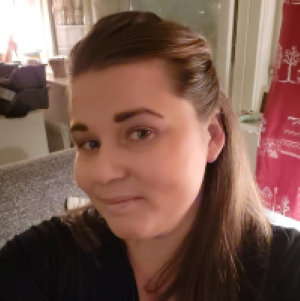

Hej, Jag heter Therese Lagerhäll och är 34 år gammal. Med en bakgrund som förskollärare har jag fått möjlighet att utveckla mina pedagogiska färdigheter och min förmåga att kommunicera och samarbeta effektivt med olika typer av människor. Efter att ha behövt byta bransch på grund av hälsoskäl fann jag en naturlig övergång till programmering. Jag fascinerades omedelbart av dess kreativa och problemlösande aspekter och har sedan dess fördjupat mig i området. Under min tid på Tetiko har jag fått värdefull erfarenhet inom webutveckling med fokus på HTML, CSS och JavaScript. Mitt starka intresse för datakunskap driver mig att ständigt sträva efter att utveckla mina färdigheter inom programmering. Jag är övertygad om att mina tidigare erfarenheter som förskollärare och min passion för att lära mig nya saker kommer att vara till stor nytta för mig i min roll som utvecklare. Jag beskriver mig själv som kreativ, nyfiken och lösningsorienterad. Jag är öppen för att utforska nya idéer och bidra till företagets tillväxt. Min förmåga att samarbeta med andra och att vara både flexibel och självständig gör mig till en värdefull tillgång för vilket team jag än arbetar med. Just den här tjänsten känns som en perfekt match för mina färdigheter och personlighet. Jag ser fram emot möjligheten att få berätta mer om mig själv, mina erfarenheter och mina ambitioner i en personlig intervju. Med vänliga hälsningar, Therese Lagerhäll
